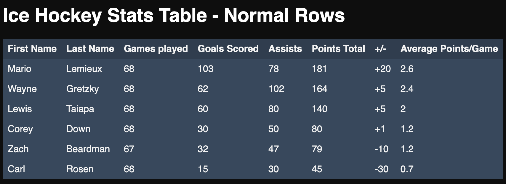
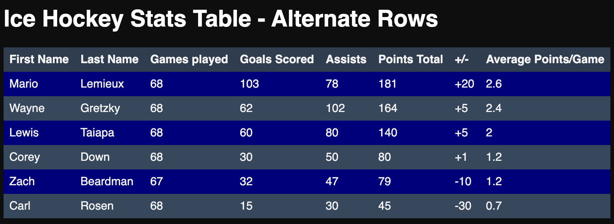

Problem Solving
Welcome to my week 4 technical blog, in this blog we will explore the concept of problem solving and explain why it is important to developers. I will also share some moments where I came across a few problems and what approaches I took to solve them.
In the world of Web Development, you are going to come across a wide range of problems that you will need to solve. This may be in the form of writing complex code to achieve a users requirements, having to learn or research new tools or properties to create a new solution, going over someone else’s code to fix bugs, the list goes on. Either way, as a developer, it is important for you to have skills necessary to be able to attack these problems in any situation. Problem solving is one of the most important skills to have as a developer and the best developers are quite often the best problem solvers! So what does it take to become a good problem solver? Is it a skill that can be developed? Absolutely!!! Here is a small list of techniques that most developers use to guide them in their day to day problem solving tasks:
-
Using Pseudocode:
-
The Rubber Ducky method:
-
Reading error messages & Console.logging:
- Googling - “Google is your friend” Use Google to research ways to help you solve your problem
- Trying something
- Asking your peers for help
- Asking coaches for help
- Improving your process with reflection
Tell a Non-Technical Friend about a time you got blocked on a simple problem
In this weeks Technical sprint I got stuck on a problem where I had to figure out a coding process to check if a number is odd or even. Although it may sound simple at first, translating that condition into logic using JavaScript code is a totally different thing! Something so small and simple can be quite the technical task.
What was the problem?
The problem was figuring out how to check if a number is odd or even using JavaScript code.
What problem solving techniques did you use?
At first I went online and used the Google approach to see what options or available methods there are to do this hoping to find an easy fix or built in method to do the calculations for me. To my dismay there weren’t any easy methods available, so I had to do some extra work and build a manual condition from scratch. I found a work around using the x % 2 remainder function, it is pretty simple once you get your head around it. All you need to do is input a number x into the equation ‘x % 2’ and if the result is == 0 then that means x is divisible by 2, which will then mean x is an even number! Reason being because any number that is divisible by 2 with no remainder will always be an even number, and there you have it, our solution!
How did you feel throughout the process?
I felt bit of nervousness at the beginning, just because I was unsure what to do and how to attack the problem. But once I committed to going online and researching ways to approach the problem those feelings began to change and I felt some relief because I could slowly start to see how I could make this work. By the end of the process I was quite proud of what I had achieved and definitely learnt something new to add to my knowledge base of JavaScript hacks.
What did you learn?
I learnt how to use the ‘x % 2’ reminder function to see if a number is purely divisible by another number or not. Then using this process to indicate if a number is odd or even. I learnt that it can also be used to see if any value of x is divisible by any other number as well not just the hard coded value 2. Reading through the articles, I found some cool other uses for this function like applying alternating background colours to table rows in CSS. A lot of developers use the remainder function to set every second row to a different colour which gives a nicer more reader friendly look to table data, especially if the table has alot of columns stretching across the screen. Check out the 2 tables I created below,he first table shows the list of Hockey player stats with normal row formatting, and the second table shows the same data but with alternating background colours. From a user perspective it can kind of make the data easier to read, and this is one visual application of the remainder function.
For more information on using the remainder function for alternating rows click here.
 Tell a Non-Technical Friend about a time solved a problem in an elegant way
One example of solving a problem in a more elegant way was this weeks use of the Array.filter() method. There was a task that required you to remove all odd numbers from a list (array) of numbers. The only method or function that I knew of to complete this task required me to write a lot of manual code to achieve the desired result, and that was to use the Array.map() method. For anyone who doesn’t know anything about coding, this method goes through each item in a list one by one and changes/deletes/adds items depending on what you are trying to achieve. In this case all we are trying to do is remove all odd numbers. The map method allows you to do that but requires you to write a whole bunch of extra code to do so. There was a better way, and I found it!
What was the problem?
The problem here was that using the .map() method was taking too long to build the code and get all the logic right. I spent a lot of time creating a specific function which went through every number in the list and deleted those that were odd without first looking for potential other more simpler ways to achieve the same result.
What problem solving techniques did you use?
Research, I used the same approach of going online and searching for better ways to interact with JavaScript Array lists, and found a solution! Arrays have a special method called .filter() which behaves like .map by going through each item in a list but more specifically only apply’s one change, you guessed it, removes items from the list (array) depending on what condition you set! How good is that?!
How did you feel throughout the process?
I felt a bit lost in the beginning because I didn’t know where to start, but when I went and did some research I felt a relief of stress and good to find a better solution. It’s rewarding to see your code working especially when it is doing something so complex but written in one line of simple code. I managed to achieve the same result using one small line of code with .filter() then the 6-7 lines of custom code using .map() to achieve the same result.
What did you learn?
I learned that google is your friend, especially for Coding! You can pretty much find anything you need for JavaScript online, including discussion boards of people who may have had the same problems and developers providing recommendations or solutions to approaching those problems. I also learned how to use the .filter() method, and how it can save you so much time when wanting to remove items from an Array. I had to learn this the hard way haha but at least now I won’t forget!